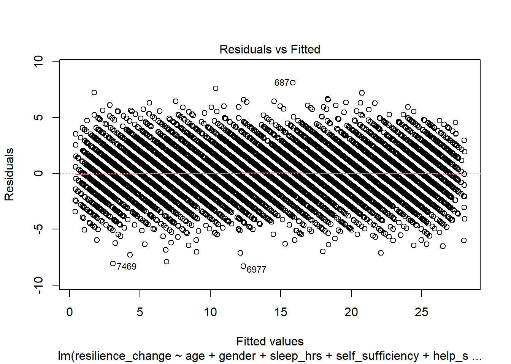
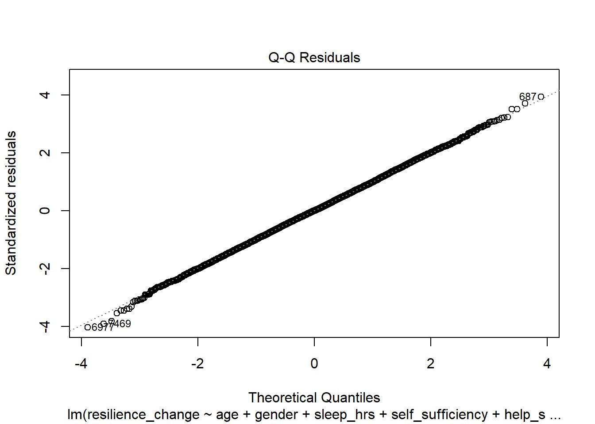
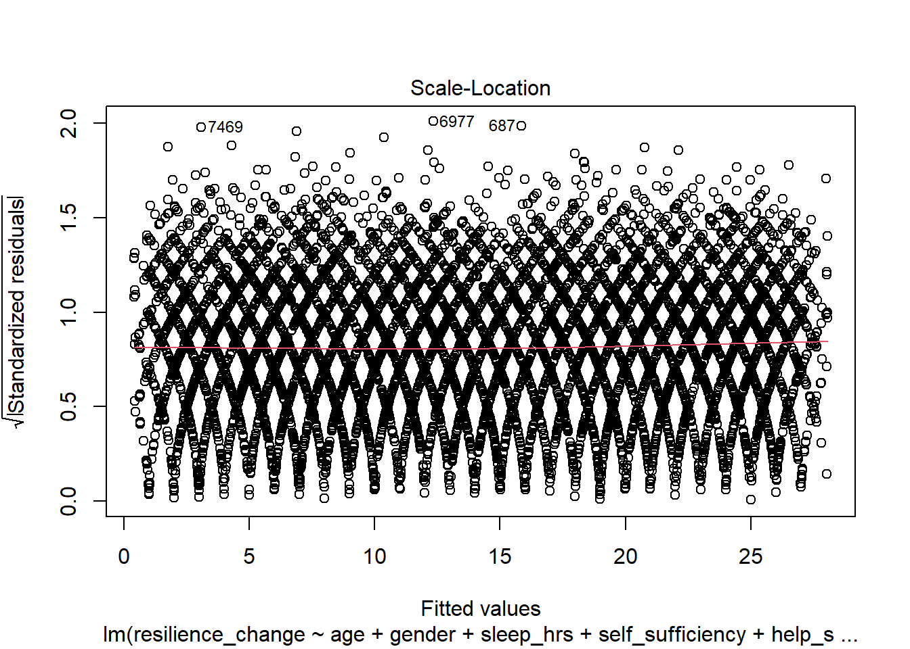
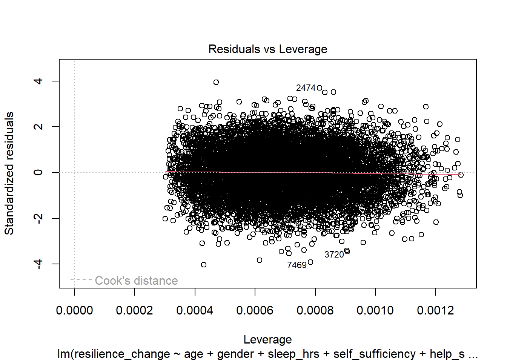

library(tidyverse)
data <- read_csv("data_formative.csv")Formative Exercise (Statistics with R)
Research Methods 1: Doctorate in Clinical Psychology
For this exercise you will need to download the following dataset: formative_data.csv
Right click and select
Research Overview
A clinical psychologist is interested in understanding what factors predict resilience. They have collected a dataset of 10,000 observations on the following variables:
resilience_change: a continuous variable representing the change in resilience from baseline to follow-up (higher scores indicate greater improvement in resilience). The original resilience score was based on a questionnaire with a final value measured on a scale from 0 to 100.age: a continuous variable representing the age of the participant.gender: a categorical variable representing the gender that the participant identifies as.self-sufficiency: a continuous variable representing the self-sufficiency of the participant. This was measured using a questionnaire with a final value measured on a scale from 1 to 30.help_seeking: a categorical variable representing whether the participant sought help during the study (yes or no).n_sessions: a continuous variable representing the number of sessions attended by the participant.sleep_hrs: a continuous variable representing the average number of hours of sleep per night.
Previous research has indicated that age and gender may be important predictors of resilience. In addition, there is a theoretical model which posits that help-seeking behavior and self-sufficiency may also be important.
Loading in the data
Research Questions
The psychologist is interested understanding:
- Are there differences in mean resilience change by gender?
This could be interpreted a couple of different ways. One way is to just describe the means of resilience for each gender. The other is to ask if there is a significant difference in the mean resilience change between genders. Depending on how exactly the later questions are approached, you could conceivably add this question to the regression models.
The simplest approach would probably be to just run a t-test (or non-parametric equivalent) comparing the means of resilience between gender.
The difference in means between genders:
data %>%
group_by(gender) %>%
summarise(mean_resilience_change = mean(resilience_change),
sd_resilience_change = sd(resilience_change),
n = n()) # A tibble: 2 × 4
gender mean_resilience_change sd_resilience_change n
<chr> <dbl> <dbl> <int>
1 f 14.2 7.75 4903
2 m 14.2 7.75 5097In this code, we are using the group_by function to group the data by the gender variable. We then use the summarise function to calculate the mean, standard deviation, and number of observations for the resilience_change variable within each group. This will give us the mean resilience.
Significance test for the difference in means between gender
Welch Two Sample t-test
data: resilience_change by gender
t = -0.054411, df = 9983.3, p-value = 0.9566
alternative hypothesis: true difference in means between group f and group m is not equal to 0
95 percent confidence interval:
-0.3122099 0.2953453
sample estimates:
mean in group f mean in group m
14.21660 14.22503 In this code, we are using the t.test function to compare the means of the resilience_change variable between the two levels of the gender variable. This will give us a p-value indicating whether there is a significant difference in the mean resilience change between genders.
- Does the number of treatment sessions predict resilience change, when controlling for the other variables? What is the contribution of the number of treatment sessions to the prediction of resilience change?
This question is asking us to determine if the number of treatment sessions is a significant predictor of resilience change, but wants to isolate the contribution of this variable above and beyond the other variables in the model. This can be done using a heirarchical regression analysis.
The way we organise the models depends on previous research and theory. For example, the information provided suggests that age and gender might be important predictors of resilience, so we might want to include these variables in the model first. Then we are told that help-seeking behavior and self-sufficiency are also important, so we might want to add these variables next. Finally, we can add the number of treatment sessions to see if it contributes significantly to the prediction of resilience change.
Hierarchical regression analysis
null_model <- lm(resilience_change ~ 1, data = data)
model1 <- lm(resilience_change ~ age + gender, data = data)
model2 <- lm(resilience_change ~ age + gender + sleep_hrs, data = data)
model3 <- lm(resilience_change ~ age + gender + sleep_hrs + self_sufficiency + help_seeking, data = data)
model4 <- lm(resilience_change ~ age + gender + sleep_hrs + self_sufficiency + help_seeking + n_sessions, data = data)In this code, we are fitting a series of linear regression models to the data. The null_model is a model with no predictors, which will give us the baseline prediction of resilience change. We then fit a series of models with different combinations of predictors, as described above.
We now need to compare the models to see which one is the best fit and to answer our research question. To do that, we can use the anova function to test whether the addition of the variables for each model significantly improves the model fit. We can also use the AIC function to compare the model fit, where reduced AIC values indicate better fit.
It is also important to check the assumptions of the model, such as normality of residuals, homoscedasticity, and multicollinearity. When we are looking at several models, we might wait to check these assumptions until we have selected the best model.
Analysis of Variance Table
Model 1: resilience_change ~ 1
Model 2: resilience_change ~ age + gender
Model 3: resilience_change ~ age + gender + sleep_hrs
Model 4: resilience_change ~ age + gender + sleep_hrs + self_sufficiency +
help_seeking
Model 5: resilience_change ~ age + gender + sleep_hrs + self_sufficiency +
help_seeking + n_sessions
Res.Df RSS Df Sum of Sq F Pr(>F)
1 9999 600077
2 9997 600038 2 39 4.6303e+00 0.009772 **
3 9996 593311 1 6727 1.5804e+03 < 2.2e-16 ***
4 9994 587407 2 5904 6.9360e+02 < 2.2e-16 ***
5 9993 42532 1 544875 1.2802e+05 < 2.2e-16 ***
---
Signif. codes: 0 '***' 0.001 '**' 0.01 '*' 0.05 '.' 0.1 ' ' 1 df AIC
null_model 2 69327.50
model1 4 69330.84
model2 5 69220.11
model3 7 69124.10
model4 8 42871.40In this code, we are using the anova function to compare the models. The output will show us whether the addition of the variables for each model significantly improves the model fit. We are also using the AIC function to compare the model fit, where reduced AIC values indicate better fit.
We can see from the output that the addition of the n_sessions variable in model4 significantly improves the model fit compared to the other models. This suggests that the number of treatment sessions is a significant predictor of resilience change, even when controlling for the other variables.
To further check this, we can also comapre the R-squared values of the models to see how much variance in resilience change is explained by the addition of the n_sessions variable.
Call:
lm(formula = resilience_change ~ age + gender + sleep_hrs + self_sufficiency +
help_seeking, data = data)
Residuals:
Min 1Q Median 3Q Max
-19.7145 -6.3736 -0.0175 6.4489 17.0652
Coefficients:
Estimate Std. Error t value Pr(>|t|)
(Intercept) 23.7735974 0.7736511 30.729 < 2e-16 ***
age -0.0041729 0.0070299 -0.594 0.553
genderm -0.0008818 0.1533719 -0.006 0.995
sleep_hrs -0.4867454 0.0452291 -10.762 < 2e-16 ***
self_sufficiency -0.2395591 0.0267414 -8.958 < 2e-16 ***
help_seekingYes -0.6712538 0.1534162 -4.375 1.22e-05 ***
---
Signif. codes: 0 '***' 0.001 '**' 0.01 '*' 0.05 '.' 0.1 ' ' 1
Residual standard error: 7.667 on 9994 degrees of freedom
Multiple R-squared: 0.02111, Adjusted R-squared: 0.02062
F-statistic: 43.11 on 5 and 9994 DF, p-value: < 2.2e-16
Call:
lm(formula = resilience_change ~ age + gender + sleep_hrs + self_sufficiency +
help_seeking + n_sessions, data = data)
Residuals:
Min 1Q Median 3Q Max
-8.3320 -1.3759 -0.0001 1.3834 8.1351
Coefficients:
Estimate Std. Error t value Pr(>|t|)
(Intercept) 36.750205 0.211322 173.906 <2e-16 ***
age -0.001098 0.001892 -0.580 0.562
genderm -0.029112 0.041272 -0.705 0.481
sleep_hrs -0.481613 0.012171 -39.571 <2e-16 ***
self_sufficiency -0.194704 0.007197 -27.053 <2e-16 ***
help_seekingYes -0.618218 0.041284 -14.975 <2e-16 ***
n_sessions -2.851420 0.007969 -357.800 <2e-16 ***
---
Signif. codes: 0 '***' 0.001 '**' 0.01 '*' 0.05 '.' 0.1 ' ' 1
Residual standard error: 2.063 on 9993 degrees of freedom
Multiple R-squared: 0.9291, Adjusted R-squared: 0.9291
F-statistic: 2.183e+04 on 6 and 9993 DF, p-value: < 2.2e-16# If we wanted, we could subtract the R-squared values of the models to see how much variance in resilience change is explained by the addition of the `n_sessions` variable.
summary(model4)$r.squared - summary(model3)$r.squared[1] 0.9080089The results show us that nearly 91% of the variance in resilience change is explained by the addition of the n_sessions variable.
This would suggest that the biggest predictor of resilience change is the number of treatment sessions attended by the participant. However, the other variables also contribute to the prediction of resilience change.
Checking assumptions of the final model




Call:
lm(formula = resilience_change ~ age + gender + sleep_hrs + self_sufficiency +
help_seeking + n_sessions, data = data)
Coefficients:
(Intercept) age genderm sleep_hrs
36.750205 -0.001098 -0.029112 -0.481613
self_sufficiency help_seekingYes n_sessions
-0.194704 -0.618218 -2.851420
ASSESSMENT OF THE LINEAR MODEL ASSUMPTIONS
USING THE GLOBAL TEST ON 4 DEGREES-OF-FREEDOM:
Level of Significance = 0.05
Call:
gvlma(x = model4)
Value p-value Decision
Global Stat 4.6253 0.32795 Assumptions acceptable.
Skewness 0.1730 0.67747 Assumptions acceptable.
Kurtosis 1.1936 0.27460 Assumptions acceptable.
Link Function 3.0613 0.08018 Assumptions acceptable.
Heteroscedasticity 0.1973 0.65689 Assumptions acceptable.
Call:
omcdiag(mod = mod, Inter = TRUE, detr = detr, red = red, conf = conf,
theil = theil, cn = cn)
Overall Multicollinearity Diagnostics
MC Results detection
Determinant |X'X|: 0.9983 0
Farrar Chi-Square: 17.2725 0
Red Indicator: 0.0107 0
Sum of Lambda Inverse: 6.0035 0
Theil's Method: -4.6421 0
Condition Number: 31.0195 1
1 --> COLLINEARITY is detected by the test
0 --> COLLINEARITY is not detected by the testThis code checks the assumptions of the final model. The plot function will show us diagnostic plots of the model, which can help us assess the assumptions of normality of residuals, homoscedasticity, and linearity. The gvlma function will perform a global validation of the linear model assumptions, and the mctest function will perform multicollinearity tests.
We can see from the output that the assumptions of the model are met, which suggests that there are no issues with inferring from this model.
- What is the best model to predict resilience change based on the variables available?
This question is asking us to determine the best model to predict resilience change based on the variables available. This is asking if any of the earlier models are better than the final model with all the variables included.
In the previous question, we found that the model with all the variables included was the best fit, it had the lowest AIC value and the highest R-squared value. This suggests that the best model to predict resilience change is the one that includes all the variables.
This might not be the case in all situations, so it is important to compare the models.
- Does age moderate the relationship between self-sufficiency and resilience change?
This question is asking us to determine if age moderates (changes) the relationship between self-sufficiency and resilience change. This can be done using an interaction term in a regression analysis.
Moderation analysis
moderation_model <- lm(resilience_change ~ age * self_sufficiency, data = data)
summary(moderation_model)
Call:
lm(formula = resilience_change ~ age * self_sufficiency, data = data)
Residuals:
Min 1Q Median 3Q Max
-20.1676 -6.3616 -0.0032 6.4517 17.9562
Coefficients:
Estimate Std. Error t value Pr(>|t|)
(Intercept) 23.333874 2.302537 10.134 <2e-16 ***
age -0.086661 0.060492 -1.433 0.1520
self_sufficiency -0.362001 0.093029 -3.891 0.0001 ***
age:self_sufficiency 0.003287 0.002444 1.345 0.1788
---
Signif. codes: 0 '***' 0.001 '**' 0.01 '*' 0.05 '.' 0.1 ' ' 1
Residual standard error: 7.716 on 9996 degrees of freedom
Multiple R-squared: 0.008285, Adjusted R-squared: 0.007987
F-statistic: 27.84 on 3 and 9996 DF, p-value: < 2.2e-16In this code, we are fitting a linear regression model to the data with an interaction term between age and self_sufficiency. This will allow us to determine if age moderates the relationship between self-sufficiency and resilience change. The summary function will show us the results of the model.
The results of the model will show us if the interaction term is not significant, which would indicate that age does not influence the relationship between self-sufficiency and resilience change. As such, we would not take further action on this question.